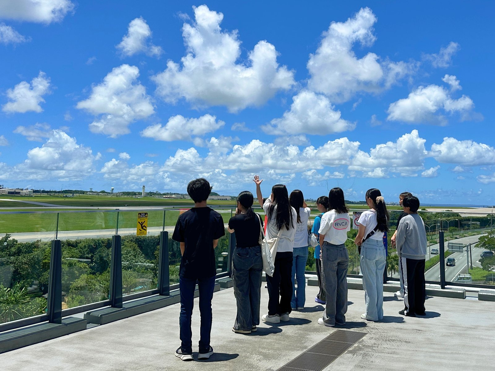
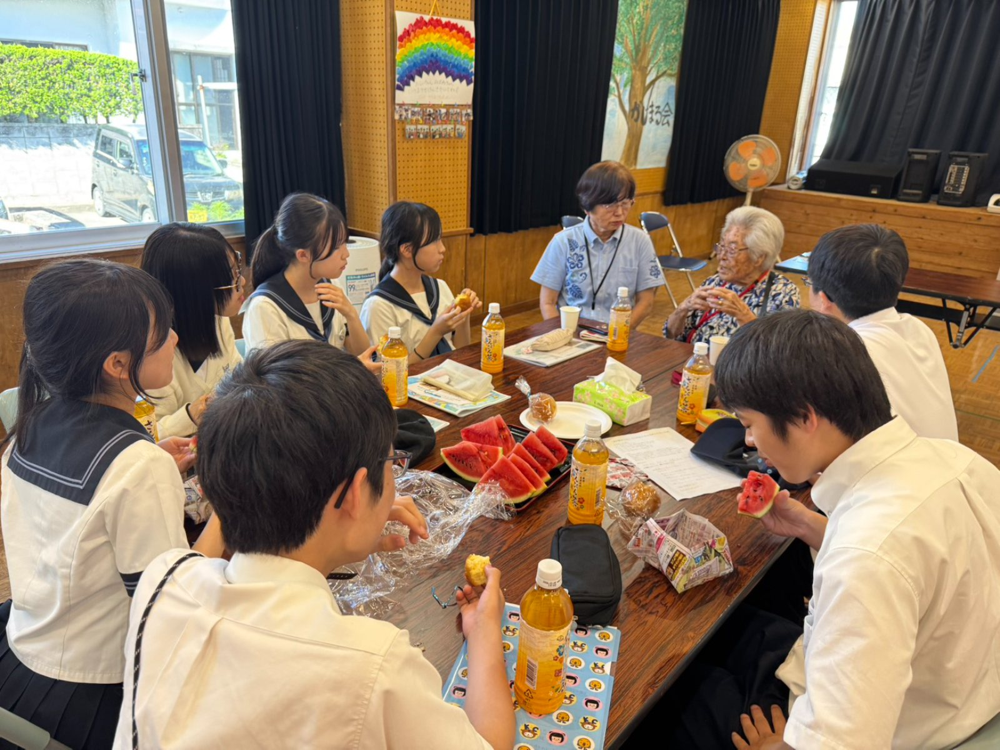
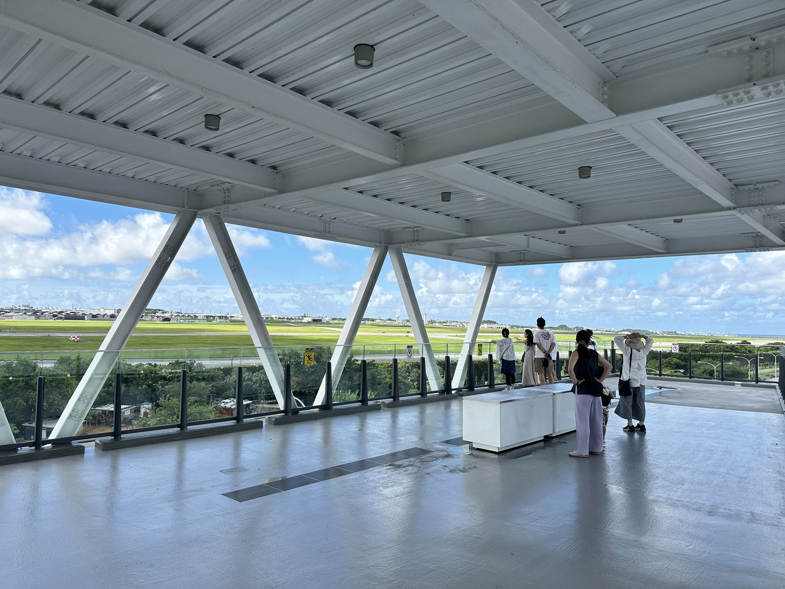
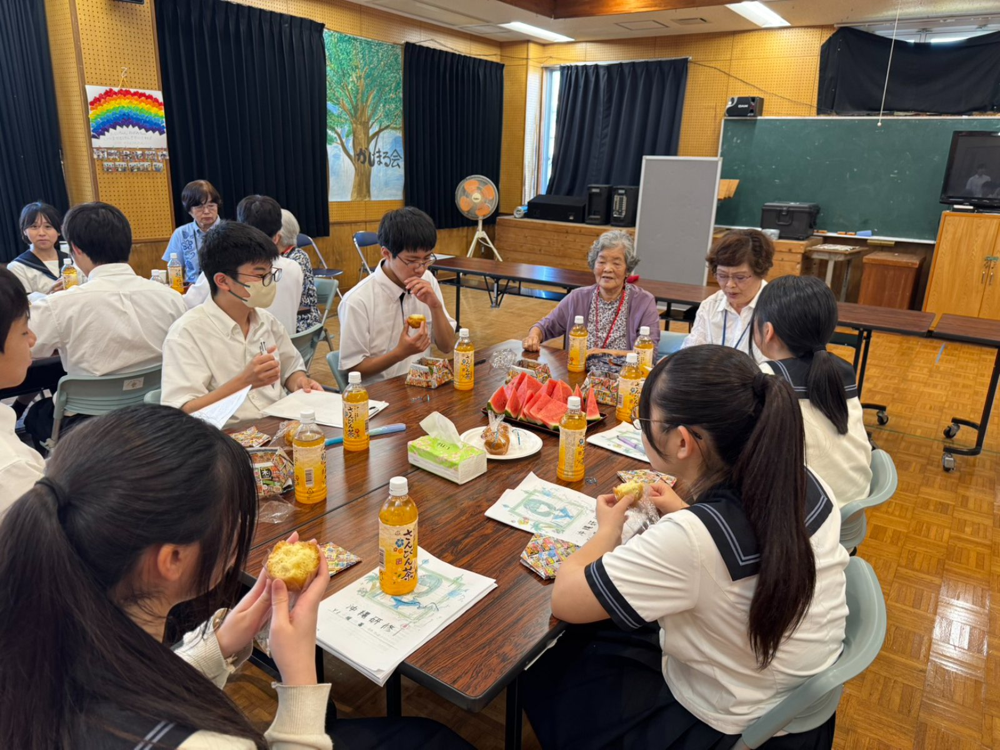

01

ガイド同行
未来型平和学習
米軍基地を見て、感じて、考える
目の前に広がる米軍基地の現実を、その目で見て、感じてください。沖縄の今を知ることが、平和を自分ごととして考える第一歩になります。
自国に他国の軍団があるという事。
沖縄戦から陸続きでいま現在もあり続けるのはなぜなのか。
これからどうなるのか。
それを問う唯一の場所。
飛び立つ戦闘機の爆音の中、
他人事から自分事になる瞬間です。
沖縄平和学習の新しい形。
見て・聞いて・知る学びを届けます。
目的・対象に合わせて選べる3つのプログラム。米軍基地を見る「未来型平和学習」を軸に、地域交流とオーダーメイド設計を束ねます。

米軍基地を見て、感じて、考える
目の前に広がる米軍基地の現実を、その目で見て、感じてください。沖縄の今を知ることが、平和を自分ごととして考える第一歩になります。

ご要望に沿って一緒に作ります
基地めぐりや各家庭の旧暦行事への参加など、目的・日程・人数に合わせてプランを一緒に組み立てます。「こんな体験をしたい」をお聞かせください。
米軍基地を見て、感じて、考える。目の前に広がる現実をその目で見ることが、平和を自分ごととして考える第一歩になります。

ご希望のスポットをお選びいただけます。組み合わせもご相談ください。
1クラスに1名のガイドが同行します
※ 20名以下の場合は20名分の料金（学生 15,400円・一般 22,000円）となります。

公民館での地域の皆さんとの交流は、何にも代えられない宝物です。
沖縄戦を生き延び、戦後の混乱の中を力強く生きてきた人々の声に、ぜひ耳を傾けてください。教科書や展示では伝わらない「基地との暮らし」を会話しながら知ることができる時間です。
教科書には載っていない言葉が、ここにあります。
※ 20名以下の場合は20名分の料金（学生 22,000円・一般 40,000円）となります。
サーターアンダギー・さんぴん茶つき
アレルギーをお持ちの方は、お申し込み時にお知らせください。対応いたします。
米軍上陸地点や中部近郊の基地めぐり、各家庭の旧暦行事への参加など、目的・日程・人数に合わせてプランを一緒に組み立てます。
「こんな体験をしたい」というイメージをお聞かせください。行程の作成から一緒に伴走し、沖縄戦から続く現実を一緒に体感する学びを設計します。
小学生から大学・一般団体まで、年代・目的に合わせてご案内します。
note「LLF OKINAWA」で、暮らしの中から見える沖縄の今を発信しています。
記事を読み込んでいます…
各プログラムへのお申し込みは「申し込みフォーム」から、その他のご相談・ご質問は「お問い合わせフォーム」からお気軽にどうぞ。
ご相談・ご質問はこちらから。担当者より折り返しご連絡いたします。